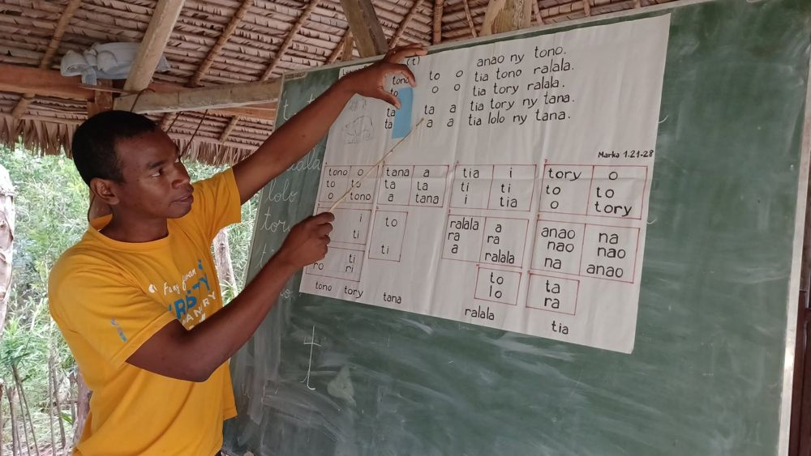
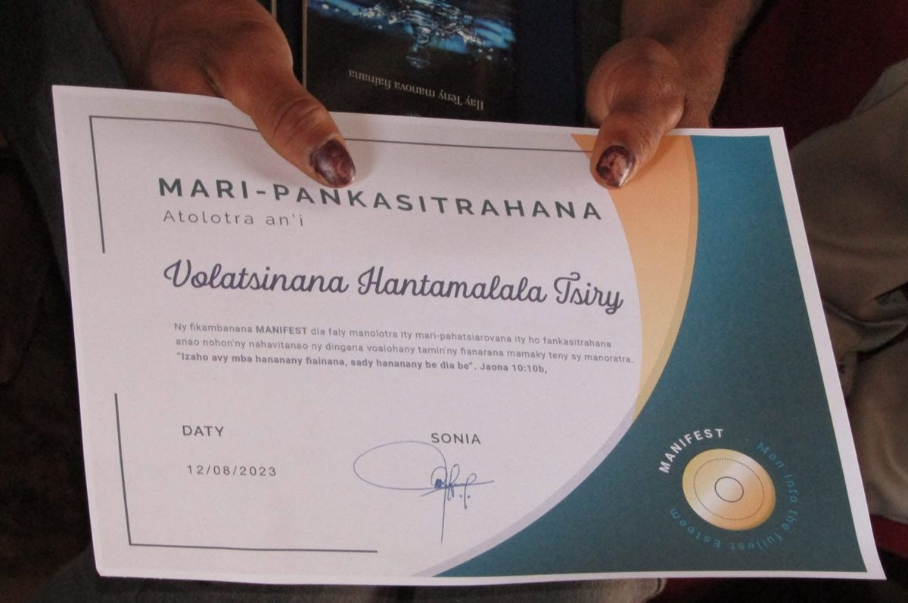
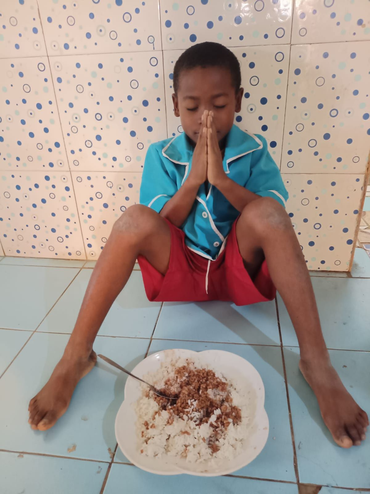

Teach. Equip. Empower.
Man Into the Fullest ESTeem. We share the Gospel of Jesus Christ and serve marginalised Malagasy children, youth and families, equipping them to grow into leaders who know God and live full lives.


Why MANIFEST?
We meet people where they are: in a village classroom, a church hall or a campus in the capital. Every programme is built on four pillars: faith, purpose, practical skills and leadership.




How you can get involved
Explore our programmes to find where you can learn, serve and pray alongside the children, youth and families we walk with.

SMF literacy classes
Literacy and life-skills classes in villages, from Belobaka to Mahambo.
Learn more →
English classes
English for children, young people and adults in several communities.
Learn more →
Kids ministry
Teaching, games and Bible time with children in schools and communities.
Learn more →
Nid de l’Espoir
Accelerated schooling and support for out-of-school children in Toliara.
Learn more →From classroom to community
Every journey begins with a class or an activity such as: literacy and English class in the community we serve. Other options are Digital & technical skills, Coding, Technology & electronics, sport and music etc. and many take up serving in their own communities.
Our ministries
Open each ministry to see photos from its work.
MANIFEST BelobakaEnglish, kids ministry, sport and music
English, kids ministry, sport, music, SMF classes and outreach in Belobaka, with SMF and kids ministry in Mandrosoarivo.

MANIFEST MahamboSMF literacy, English and graduations
SMF literacy classes, English, coding and identity sessions, and graduations in Mahambo and Andekaleka, including the Campus Mitsinjo classes.

Digital & technical skills, Coding
Focus: Digital & technical skills, Coding · Technology & electronics

SMF
Focus: Literacy · Academic support

The SMF, School of Sharing Life for Transformation, (Sekoly Mizara Fiainana) in Tanambazaha Mahambo officially launched on Monday, February 16th, 2026 and still going on. We are now approaching the last 3 months of this school.
We are incredibly proud of our MANIFEST leaders, Elysé and Felana. They have made significant sacrifices to get this school off the ground.
Every Monday, Wednesday, and Friday, they walk for an hour and a half just to reach Tanambazaha from Mahambo, teach from 8:00 a.m. to 10:00 a.m., and then walk another hour and a half back.
Tanambazaha is 7 km from Mahambo, and the journey is made entirely on foot for now as we only borrow bicycle sometimes to reach there.

FOCUS: EDUCATION AS A DOOR TO OPPORTUNITY
- Sport — Building teamwork, discipline, confidence, and leadership through football and other sports.
- Literacy — Helping people read, write and gain confidence.
- Academic support — Helping children and youths grow in their studies.
- Languages — Opening access to communication and new opportunities.
- Digital & technical skills, Coding — Preparing youths for a changing world.
- Technology & electronics — Developing practical and future-oriented skills.
- Cooking & pastry — Turning skills into creativity and potential income.
Teach. Equip. Empower.
MANIFEST AntananarivoEnglish classes
English classes in Antananarivo.


Nid de l’EspoirSchooling and support for out-of-school children
Accelerated schooling, a school canteen and support for out-of-school children in Fokontany Andranomena, Toliara.


“We will go to different nations to bring the gospel of the Kingdom.”
Our vision for 2026–2030

Impact through outreach
Our outreach teams bring literacy, Bible teaching and practical help into communities such as Belobaka. In August 2023 we ran a covid relief distribution there, and we continue to visit schools and villages with the Gospel.
See our eventsStories from our communities
Graduations and celebrations show what God is doing in the lives of learners, teachers and families.
Ready to take the next step?
Explore our programmes, support Nid de l’Espoir, or offer your skills to teach, coach or volunteer.